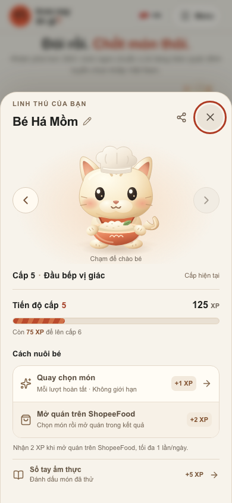
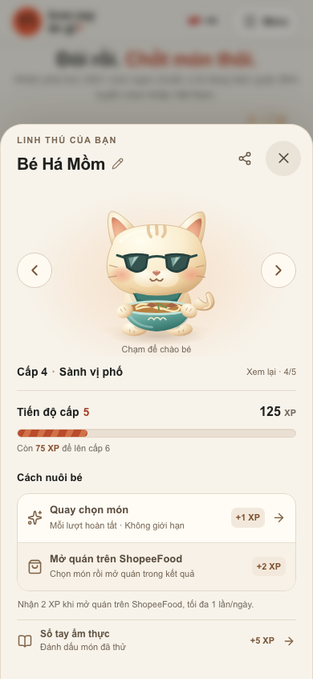
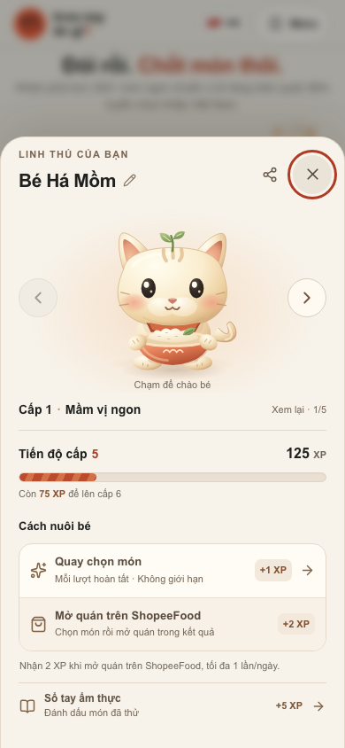

FOODTOUR · CẬP NHẬT LINH THÚ · 02/10/2026
Hai mũi tên. Một linh thú.
Xem lại từng cấp ngay trên nhân vật chính. Nút trái về cấp thấp hơn; nút phải đến cấp cao hơn đã mở. Tới giới hạn, nút chuyển xám. Cấp và XP thật luôn hiển thị riêng ở phần tiến độ.

Cấp hiện tại. Nút phải dừng, giữ bí mật tạo hình chưa mở.

Xem lại cấp thấp. Hai mũi tên nằm cạnh linh thú; tên cấp đổi theo hình.

Về cấp đầu tiên. Nút trái dừng. Xem lại không đổi XP hay trang phục đang có.
28 kiểm tra tự động đạt trên Chromium/WebKit, gồm màn hình từ 320px, bàn phím và reduced motion. 98 unit test và production build đạt.
Ảnh chụp ứng dụng local bằng dữ liệu QA cô lập: 125 XP/cấp 5. Không thay đổi tiến độ thật. Chưa kiểm tra iPhone/Android vật lý.